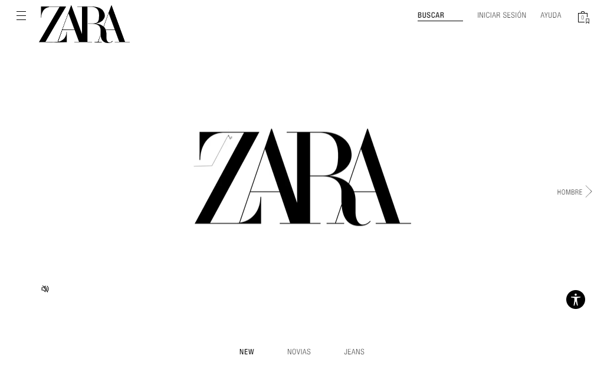
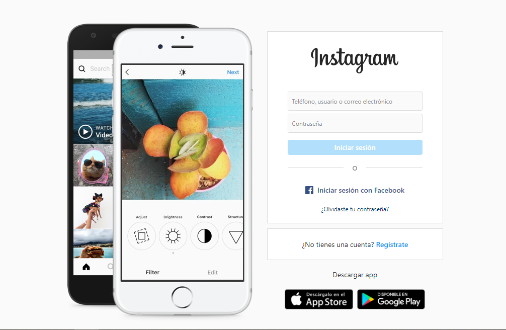
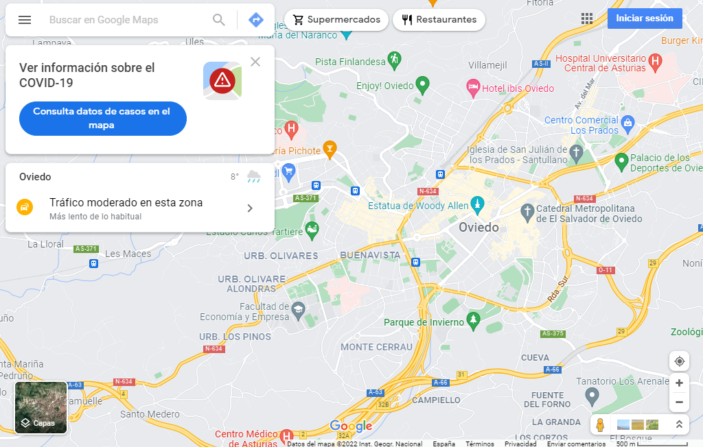
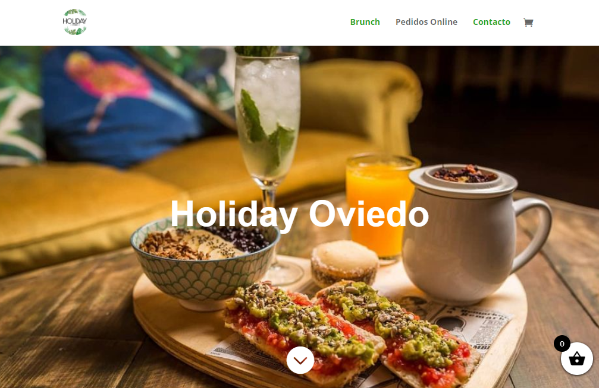

Una de mis grandes aficiones es la moda y, como gran fan de la moda, me encanta comprar mucha ropa para poder combinarla de mil formas. Una de mis tiendas favoritas es Zara.
Me encantan las redes sociales y poder estar al día de todas las cosas que ocurren. La red social que más uso es Intagram y, la verdad, me podría pasar en ella mucho tiempo...
Siempre que viajo, Google Maps es una plataforma muy útil. Con ella siempre consigo llegar a mi destino porque, aunque yo diga que tengo muy buen sentido de la orientación... suelo perderme muy fácilmente.
Mi pasatiempo favorito es salir con mis amigos a tomar algo y pasarnos la tarde charlando. Uno de los bares a los que más suelo ir con ellos es Holiday. En él podemos encontrar bebidas y comidas diferentes y originales y, al haber tanta variedad de productos, siempre hay todos los gustos.
